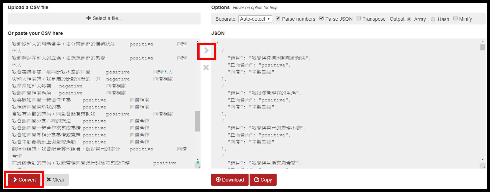

題目產生器
展開說明
1.將題庫從excel轉成json.
(可用這網站
csv2json
. 將excel貼到左邊, 按下"covert"結果會輸出在右邊)

2.將轉成json的題庫貼入下方文字框. 然後選題並確認.
[{"題目":"我覺得任何困難都能解決","正面負面":"positive","向度":"主觀幸福"},{"題目":"我很滿意現在的生活","正面負面":"positive","向度":"主觀幸福"},{"題目":"我覺得自己的表現不錯","正面負面":"positive","向度":"主觀幸福"},{"題目":"我覺得生活充滿希望","正面負面":"positive","向度":"主觀幸福"},{"題目":"我覺得生活很充實","正面負面":"positive","向度":"主觀幸福"},{"題目":"我覺得生活自在又快樂","正面負面":"positive","向度":"主觀幸福"},{"題目":"在不認識的人面前說話，讓我很有壓力","正面負面":"negative","向度":"生活壓力"},{"題目":"我在寫考卷時，會感到緊張","正面負面":"negative","向度":"生活壓力"},{"題目":"我覺得目前的課業學習是有壓力的","正面負面":"negative","向度":"生活壓力"},{"題目":"我聽不懂老師上課講解的課本內容","正面負面":"negative","向度":"生活壓力"},{"題目":"我如果隨便亂發脾氣，事後會很後悔","正面負面":"positive","向度":"自我反省"},{"題目":"在情緒(喜怒哀樂)發生後，我能情緒反應後的意義","正面負面":"positive","向度":"自我反省"},{"題目":"我會主動反省自己的情緒表達是否恰當","正面負面":"positive","向度":"自我反省"},{"題目":"我對現在的自己感到滿意","正面負面":"positive","向度":"自我接納"},{"題目":"我能接納目前的自我","正面負面":"positive","向度":"自我接納"},{"題目":"我能接納自己過去所有的正負向經驗","正面負面":"positive","向度":"自我接納"},{"題目":"在情緒(喜怒哀樂)發生後，我能坦然面對自己的反應","正面負面":"positive","向度":"自我接納"},{"題目":"即使現在的情緒讓我困擾，但我相信自己有能力應付","正面負面":"positive","向度":"自我接納"},{"題目":"我能夠正確地表達出自己的情緒。","正面負面":"positive","向度":"自我情緒覺察"},{"題目":"我能掌握自己的情緒變化","正面負面":"positive","向度":"自我情緒覺察"},{"題目":"我知道有時候我表達出來的情緒感覺，不是心裡真正的感覺","正面負面":"positive","向度":"自我情緒覺察"},{"題目":"我知道自己為什麼焦躁不安","正面負面":"positive","向度":"自我情緒覺察"},{"題目":"我知道自己的情緒表現是否真實","正面負面":"positive","向度":"自我情緒覺察"},{"題目":"我知道自己為什麼開心或生氣","正面負面":"positive","向度":"自我情緒覺察"},{"題目":"當心情不好時，我會用運動、散步、聽音樂或玩手機等方式讓心情變好","正面負面":"positive","向度":"壓力抒發"},{"題目":"難過的時候，我會想一些開心的事情","正面負面":"positive","向度":"壓力抒發"},{"題目":"遇到困難時，我會主動找家人、師長或好友說心裡的想法","正面負面":"positive","向度":"壓力抒發"},{"題目":"我會盡力完成被分配到的工作","正面負面":"positive","向度":"自我激勵"},{"題目":"我會盡力完成老師交代的事情","正面負面":"positive","向度":"自我激勵"},{"題目":"我能夠改進自己的缺點","正面負面":"positive","向度":"自我激勵"},{"題目":"遇到困難，我會想辦法解決","正面負面":"positive","向度":"自我激勵"},{"題目":"我能夠持之以恆地把事情完成","正面負面":"positive","向度":"自我激勵"},{"題目":"當我遇到困難時，我會試著從書本中找出解決的方法","正面負面":"positive","向度":"參照經驗"},{"題目":"當我有不好情緒反應時，會尋求他人協助以排除不舒服感","正面負面":"positive","向度":"參照經驗"},{"題目":"當出現和過去類似情緒經驗時，我能回想所學的因應方式","正面負面":"positive","向度":"參照經驗"},{"題目":"當我產生不好的情緒時，能積極面對不逃避","正面負面":"positive","向度":"情緒管理"},{"題目":"我不開心時，不會遷怒別人","正面負面":"positive","向度":"情緒管理"},{"題目":"我與同學發生衝突時，不會口出惡言或動手打人","正面負面":"positive","向度":"情緒管理"},{"題目":"當我遇到困難時，我能以正向態度面對解決","正面負面":"positive","向度":"情緒管理"},{"題目":"我能夠在不同情境下(如被誤會時、與人意見不合時或歡樂時刻)，適當的表現出喜怒哀樂的情緒","正面負面":"positive","向度":"情緒管理"},{"題目":"我遇事心情平靜，能理智地分析表達","正面負面":"positive","向度":"情緒管理"},{"題目":"我能透過語音、語調或面部表情表達內心的喜悅","正面負面":"positive","向度":"情緒管理"},{"題目":"我覺得同學不喜歡我","正面負面":"negative","向度":"同理他人"},{"題目":"當同學開心時，我也會替對方感到開心","正面負面":"positive","向度":"同理他人"},{"題目":"我看到同學的表情，我可以知道他生氣了","正面負面":"positive","向度":"同理他人"},{"題目":"當我看到有同學被排擠或取笑時，我會感到難過","正面負面":"positive","向度":"同理他人"},{"題目":"我能從別人的談話當中，去分辨他們的情緒狀況","正面負面":"positive","向度":"同理他人"},{"題目":"我能夠站在別人的立場，去想想他們的感覺","正面負面":"positive","向度":"同理他人"},{"題目":"我會善待並關心那些比我不幸的同學","正面負面":"positive","向度":"同理他人"},{"題目":"與別人相處時，我是屬於比較沉默的一方","正面負面":"negative","向度":"同儕相處"},{"題目":"我常常和別人吵架","正面負面":"negative","向度":"同儕相處"},{"題目":"我跟同學相處融洽","正面負面":"positive","向度":"同儕相處"},{"題目":"我喜歡和同學一起做任何事","正面負面":"positive","向度":"同儕相處"},{"題目":"我相信同學告訴我的事","正面負面":"positive","向度":"同儕相處"},{"題目":"當我有困難的時候，同學會願意幫助我","正面負面":"positive","向度":"同儕相處"},{"題目":"我會跟同學分享心裡的想法","正面負面":"positive","向度":"同儕合作"},{"題目":"我會跟同學一起合作來完成事情","正面負面":"positive","向度":"同儕合作"},{"題目":"我會和同學互相分享事情或東西","正面負面":"positive","向度":"同儕合作"},{"題目":"我會主動參與班上與學校活動","正面負面":"positive","向度":"同儕合作"},{"題目":"課程分組時，我會配合其他組員，做好自己的本分","正面負面":"positive","向度":"同儕合作"},{"題目":"在班級活動的時候，我能帶領同學進行討論並完成任務","正面負面":"positive","向度":"同儕合作"},{"題目":"上課時，我會專心聽講，不會影響班級秩序","正面負面":"positive","向度":"同儕合作"},{"題目":"我會經過同學同意後才使用他的東西","正面負面":"positive","向度":"同儕合作"},{"題目":"和別人互動時，我會注意應對的禮貌(如:微笑、點頭、專注聆聽、注視對方等)","正面負面":"positive","向度":"同儕合作"},{"題目":"在團體競賽或課程活動中，同學有好表現時，我會給予讚美","正面負面":"positive","向度":"同儕合作"},{"題目":"在學校裡，我有一個以上可以一起聊天的朋友","正面負面":"positive","向度":"同儕合作"},{"題目":"我喜歡幫助有困難的同學","正面負面":"positive","向度":"同儕合作"},{"題目":"同學難過時，我會去安慰他(她)","正面負面":"positive","向度":"同儕合作"},{"題目":"接受同學的幫助後，我會向他道謝","正面負面":"positive","向度":"同儕合作"},{"題目":"和同學交談時，我會保持好的語氣","正面負面":"positive","向度":"同儕合作"},{"題目":"在接受別人的幫助後，我會表達感謝","正面負面":"positive","向度":"同儕合作"},{"題目":"同學取笑我、欺負我的時候，我會生氣罵回去","正面負面":"negative","向度":"衝突處理"},{"題目":"當我因為別人的話感到生氣時，我會試著告訴他我的想法","正面負面":"positive","向度":"衝突處理"},{"題目":"當我和同學發生問題時，我會嘗試去解決","正面負面":"positive","向度":"衝突處理"},{"題目":"在課堂上，我能尊重同學的意見，不會隨意取笑同學","正面負面":"positive","向度":"衝突處理"}]
手動選題
亂數選題
確認
主觀幸福
我常常覺得很開心